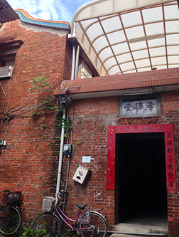
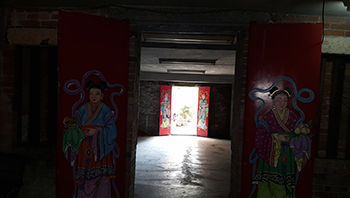

社子島位於臺北市的西北邊,也就是現今延平北路七段、八段、九段一帶，最早是平埔族的活動領域,在17 世紀末曾經因為地震造成地層下陷,但隨著河水帶來的泥沙淤積，社子島逐漸從臺北湖中浮現，再次成為平埔族人漁獵的場地, 後來來自福建泉州的同安縣人也紛紛來到此地開墾，形成了許多漢人聚落。
社子島各庄頭主要大厝分布圖
早期社子島地區大多是平房建築，因為以前常淹水的關係，並不適合蓋土角厝，一般人家大多是以竹枝木條編成牆壁再塗上泥土、石灰強化的塗壁厝、竹篙厝為主，再以茅草、稻草覆蓋作為屋頂；只有大戶人家才會有磚瓦建造的紅磚厝、樓仔厝。以前社子地區路邊都會種一些刺竹，颱風來可以擋風 ，竹子能作為建材，竹筍也能成為食材，很具有實用價值。
以前貧苦人家的草厝，牆壁不是磚頭而是竹片枝條加上泥土塗壁
| 各庄頭大厝名稱 | 建築特色 |
|---|---|
| 燕樓李宅 (七段 63 巷 12 弄 2 號、4 號) |
1.溪洲底地區堂號為「燕樓」的李姓家族的祖厝，先祖來自於福建省泉州府同安縣林伯兜，清朝乾隆年間移民至臺北盆地，其中一支在淡水，另一支在社子島。 2.具完整三合院格局，正身五開間，左右帶護龍；其構造特色為外牆紅磚斗砌法，下部纍石為基、木構穿斗、瓦砌屋頂，正廟內兼有木柱及磚柱，推測此作法是為防洪水；右護龍屋頂雖已局部坍塌，仍具閩南建築特色。 |
| 浮洲王宅 (八段 2 巷 200 弄 11、13、14、 15 號，八段 2 巷 206 弄 1 號) |
1.浮州地區泉州籍王姓家族的祖厝，先祖來自於福建省泉州府同安縣高浦，相傳後裔王孝因勤儉致富所建，現今建物於民國94年曾由王登旺等人重修。 2.主體分為前後兩部分，格局特殊，前部孝得堂為二層樓三合院格局，紅磚造建築，部分構造曾整修(鋼筋混凝土樑、地板及門扇)；後部為街屋式加強磚造建物(具騎樓)，以兩座樓梯連接樓上空間，建物內裝木板隔間仍保存舊貌。 |
| 李和興宅 (八段 133 巷 11 號、19 號 ) |
1.溪砂尾地區李姓家族著名的的樓仔厝，民國34年由後裔李錫錄所建，先祖來自於福建省泉州府同安縣兌山。民國52年葛樂禮颱風造成水災時，附近的居民帶著牲畜通通爬上二樓一起避難，是老一輩人共同的回憶。 2.傳統合院格局，正身為二層樓磚造建築，正身雖已改建為仿古鋼筋混凝土建築，但建物形式與一般民宅不同。左右護龍採明間凹壽作法，相關建築構造如凹壽、燈樑、疊澀等，推測為日治時期興建，保留有完整構造與紋路。 |
| 李忠記宅 (九段 86 號) |
1.浮汕中洲埔地區泉州籍李姓家族祖厝，先祖來自於福建省泉州府同安縣兌山，又稱「李忠記」。 2.創建於日治時期，為一層樓傳統漢式正身護龍厝，三合院形式，正身五開間、護龍三條，合院院門位於右前方，頗具特色。磚造圓桁屋頂構造，外壁紅磚承重外牆，內壁採穿斗(混抬樑)式、木構隔間，正身另有內廊串連，木屏壁為編竹泥壁，基礎以唭哩岸石墊高兩階，地坪為觀音山石，具半樓仔，極具古意，且形貌保存完整。 |
探訪李和興宅
李和興宅的右護龍厝裡面還保留有小閣樓(半樓仔)；正身廳裡吊掛在梁柱上的竹籃子就像是以前的冰箱一樣，把吃的東西都放在裡面，需要時再拿下來取用；還可以看見以前的廚房爐灶(灶腳)，要煮飯前得先燒柴呢！
半樓仔
竹簍
灶腳
李和興宅改建前後對照圖
探訪李忠記宅
美學會美芳老師為大家解說牆上的洞是放置煤油燈用的，這樣就可以同時為兩間房間照明，不失為一個節能減碳的好設計；從正身廳裡懸掛的匾額就可以知道屋主在日治時期曾擔任保正20年以上，從主樑採用福州杉就可知是當時的大戶人家；右護龍屋頂採用金形馬背的形式，山牆採用全面磚牆，較為堅固耐用
油燈洞
保正匾額
金形馬背
探訪浮洲王宅
紅豆阿嬤帶領著我們參訪浮洲著名的磚造樓仔厝(後半段)；前半段正身二樓的王氏祠堂仍保有傳統紅磚牆及木構造屋頂；已改建的一樓內聽有兩道門扉，並繪有門神。
樓仔厝
祖厝二樓- 
一樓內廳
富安國小對面的洪氏大厝(已改建)
洪曜平先生拿著他親筆繪畫的洪氏大厝素描圖仔細地為我們解說著。這個是大廳，這個是護龍尾，這個一排一排，還有後面這排(大厝左護龍第二排)是養豬的豬舍，後面一排，我住在這邊(大厝右護龍靠前)。那這邊(大厝左護龍)是我的堂兄弟他們住的，我住在這邊，對面就是學校。後面有著厝圍、竹圍，竹子給它包圍，全部都有圍起來。以前我們鄉村裡頭，就是種竹，美國話叫bamboo,種竹子種整排的。我後門種了一棵龍眼樹以前光復以後的X校長住這邊(大厝右護龍後排) ，住我的房子，出入這邊(大厝右護龍後側)到學校去。裡面有一個大庭園，外面有一個牆圍，牆圍當中有門柱，門柱很高，我出入是這樣出入的。到了民國58年才拆掉，蓋這一整排房屋，和後面那一排房屋。我這個房子我出生的時候就有了，我出生1歲開始有，到我40歲那時候拆掉，民國58年拆掉，蓋這排房子。
資料來源：文化部文化資產局：國家文化資產網、社子島美學會文史資料、1921年日治兩萬五千分之一地形圖、1974年臺北市舊航照影像圖

- 我發現以前的屋子有些事用紅磚蓋的，不像現在的房子幾乎都是用鋼筋、水泥蓋的比較堅固，但是以前的房子也有好處，就是很通風又很有風格，有獨特的特色，會帶給人們一些好的感覺。像是燕樓李宅、浮洲王宅、李和興宅、李忠記宅這些等等。